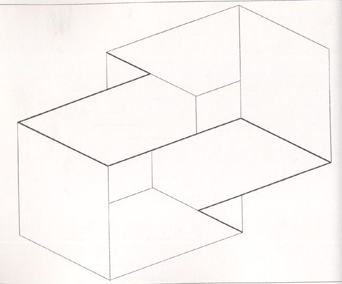

Josef Albers trivia

2:00
-
1. What year was Josef Albers born?
2. Which of these quotes can be correctly attributed to Albers?
3. Which of these universities was the second American university in which Albers held a teaching position?
4. Complete this quote by Albers "I've handled colour as a man should behave. You may conclude that I consider _____ and _____ as one."
5. Albers spent the majority of the last years of his life in which of these American states?
6. Albers most famous written work is known as:
7. Albers most famous series of work in visual art is known as:
8. Which of these statements regarding Albers' aesthetic philosophy can be said to be false?
9. Which of these statements regarding Albers' aesthetic philosophy can be said to be true?